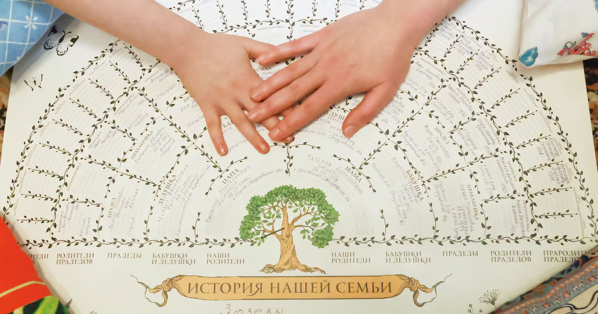
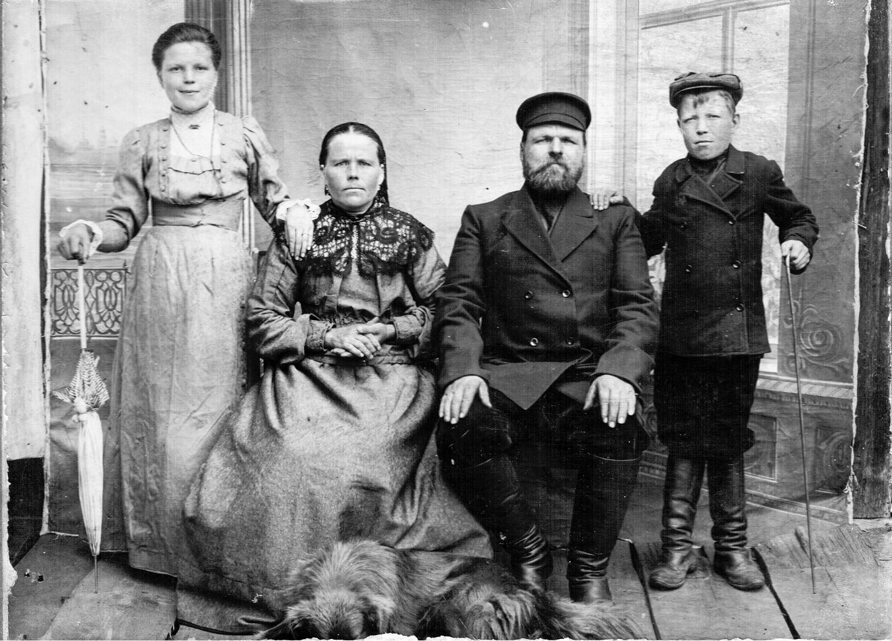
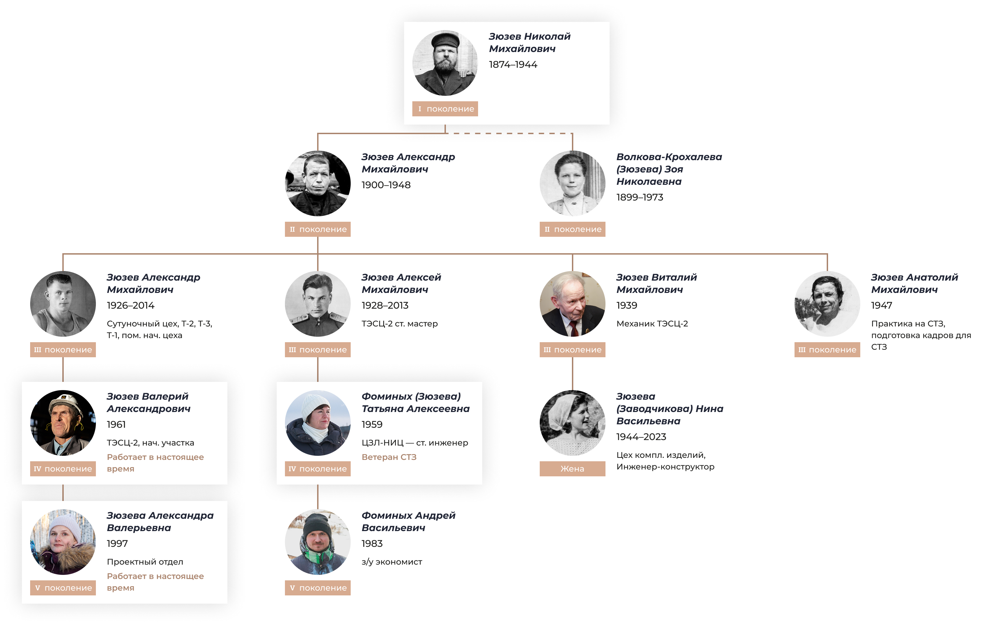
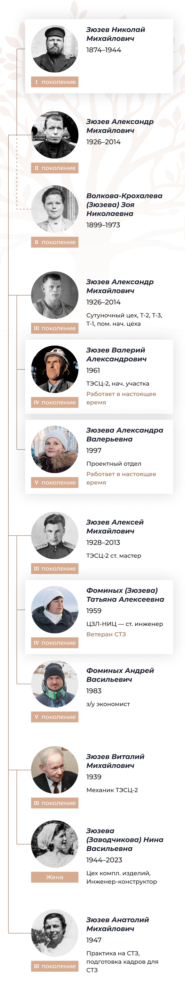
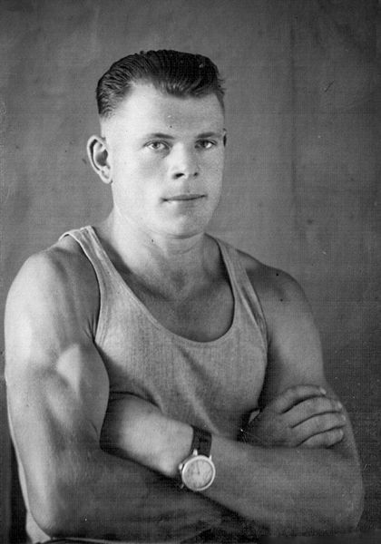
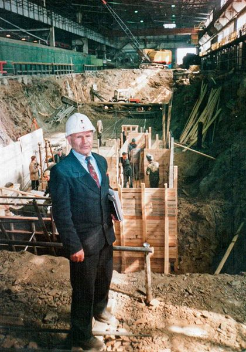

Династия
Зюзёвых
Предисловие
Уральский писатель Павел Бажов в своих сказах описывал мифический народ, обитавший в окрестностях Полевского. «Какой веры-обычая и как прозывались, про то никто не знает. По лесам жили. Одним словом, стары люди...» Среди прочего их отличало глубокое знание горного дела. По версии Бажова, легенды о чуди (другое название «старых людей») потому здесь так долго и ходили, что Полевской завод строился на месте древних чудских рудокопен.
Если диковинный народ и правда жил в этих краях, то уже давно их покинул. А завод остался. И работают на нем не менее удивительные люди.
Наши герои — семья Зюзёвых, выходцы из одной из старейших трудовых династий Северского трубного завода (СТЗ), который входит в Трубную Металлургическую Компанию (ТМК). Ее летопись ведется на протяжении уже пяти поколений. Общий трудовой стаж работников — более 800 лет.
Александр и Алексей Михайлович Зюзёвы из третьего поколения династии — центральные фигуры в ее истории. Братья всю жизнь проработали на СТЗ, участвовали в запуске основных цехов завода, организовали беговое движение на предприятии и в городе. Семейные традиции — заботиться о родных, заниматься спортом, интересоваться историей рода и края — они если не заложили, то точно приумножили. Братьев уже нет в живых, но Александр и Алексей словно незримо присутствуют в жизни завода, города и своей семьи. Им посвящены отдельные главы.
{kind=link}
{kind=link}
{kind=link}
{kind=link}
Татьяна Алексеевна Фоминых (в девичестве Зюзёва) отдала заводу 25 лет. В династии именно она отвечает за сохранение истории семьи и спортивные традиции. Ее двоюродный брат Валерий Александрович Зюзёв обладает самым большим стажем из ныне живущих Зюзёвых и по-прежнему трудится в заводском цеху. Александра, дочь Валерия, представляет на СТЗ пятое поколение. Сейчас она в декрете и воспитывает дочку, возможно, будущую продолжательницу трудовой династии.
Еще один рассказчик — младший брат Александра и Алексея, профессор кафедры электропривода и автоматизации промышленных установок Уральского федерального университета (УрФУ) — Анатолий Михайлович Зюзёв. Живой представитель третьего поколения династии, он никогда не работал на СТЗ, но студенческую практику проходил именно на заводе. Кроме того, под его непосредственным руководством высшее образование по специальности, востребованной на СТЗ, получали Валерий Александрович и Александра Зюзёвы.
История трудовой династии Зюзёвых сама по себе похожа на сказ. Среди его действующих лиц — сильные духом рабочие, которые не чурались тяжелой работы и доводили любое начинание до конца. Простые люди, которые могли безо всяких сапогов-скороходов земной шар обежать. Знатоки своего дела и мастера на все руки. Женщины в династии Зюзёвых словно сошли со страниц русских сказок. Ни в чем мужчинам не уступают, а в чем-то даже превосходят. Хранительницы очага и оплот семьи, но, если понадобится — и на гору взойдут, и со сложной техникой разберутся.
В то же время это скромные люди со своими переживаниями, заботами и увлечениями. Но лучше пусть они расскажут о себе сами.
{kind=link}

Зюзёвы Агриппина Андреевна и Николай Михайлович с детьми — Зоей и Михаилом, 1912 год.Истоки. От золота
к металлургии
История династии берет начало в селе Косой Брод, что недалеко от Полевского. Основано оно было в 1723 году, о чем свидетельствует обелиск, установленный, к слову, по инициативе представителя рода Зюзёвых, Николая Федоровича.
Косой Брод — место бажовских сказов. Именно здесь разворачивались события ряда произведений писателя. «Жил тут старатель один, Никита Жабрей прозывался, — писал Бажов в сказе „Жабреев ходок“. — Этот Жабрей в одиночку больше старался, места новые искал и, случалось, находил. Придёт тогда в деревню и сам скажет: — Вот, мужики, там-то попадать золотишко стало. И верно, стараться можно».
В реальности кособродцы Жабрею не уступали. В 1935 году село прославилось на весь мир: здесь обнаружили гигантский 13-килограммовый золотой самородок «Лосиное ухо». Похоже, занимались золотодобычей в Косом Броду и Зюзёвы...
{kind=link}
{kind=link}
{kind=link}
{kind=link}
{kind=link}
{kind=link}
{kind=link}
{kind=link}
{kind=link}
{kind=link}
{kind=link}
{kind=link}

Первым поселенцем Косого Брода был Михайло Зюзев 1676 года рождения. Он приехал сюда из Центральной России, как и многие крестьяне, которые бежали в поисках лучшей жизни. Это удалось установить Николаю Федоровичу Зюзеву, моему дяде по материнской линии. Мама в девичестве тоже Зюзевой была. Николай Федорович, как военный, имел упрощенный доступ к архивам. На основе своих изысканий он написал две книги. Одна из них – «Заметки по истории Полевского района». Ее он напечатал на машинке, сделал несколько экземпляров, который раздал в краеведческий музей Полевского, музей Косого Брода, а также сестрам и братьям. Таким образом эта книга оказалась у мамы. По маминой инициативе мы ее переиздали. А еще есть «История Косого Брода», никогда не переиздававшаяся. В ней – родословное древо Зюзевых, но без папиной ветки. Сейчас нахожу захоронения предков по папиной линии. Плиты там старые-старые, и написано на них по-старинному. Например, отец моего прадедушки там «Михайло Васильевич Зузев».
С Николаем Федоровичем мы встречались в бабушкином доме. Летом он приезжал помочь с огородом. Его всегда тянуло в Косой Брод, на родину. Кстати, в прошлом году именем Николая Федоровича Зюзева назвали в селе одну из улиц.
В начале 19 века в окрестностях Косого Брода нашли золото. С тех пор почти все жители села занимались золотодобычей. В 1935 году артель Ильи Пальцева наткнулась на «Лосиное ухо» – третий по величине золотой самородок, найденный в России. Кстати, Пальцев – наш родственник. Дальний, но все же. Когда видишь муляж «Лосиного уха» в краеведческом музее, думаешь: а ведь этот самородок моя родня нашла.
Скорее всего, золотодобычей занимались и наши предки. В Косом Броду стоит старый дом родителей моей матери. За ним большой огород, и там вырыта яма. Бабушка и мама рассказывали, что здесь пытались добывать «золото».
У меня в памяти два реальных подтверждения, что там что-то было. В огороде на заднем дворе родительского дома у нас лежала так называемая бутара. Это инструмент для промывки песка. В ней ничего хитрого: это три доски, сколоченные в виде лотка. Сам лоток широкий. Эта бутара при сносе дома была взята братом Алексеем, Таниным отцом, и отдана мне на сохранение как память.
Вторая деталь – цельнотянутые кожаные сапоги. Есть фотография, на которой в них запечатлен дед с еще молодым нашим отцом, совсем мальчишкой. Эти сапоги сделаны из одного куска кожи, с кожаной подошвой и подбиты деревянными гвоздиками. А самое интересное в них то, что, по рассказам то ли матери, то ли братьев, куплены они были в магазине «Концессия», в котором торговали на «золото». То есть не за деньги были куплены эти сапоги.
С одной стороны, если в нашей семье золотодобычей и занимались, то особого богатства, я так понимаю, она не принесла. С другой, отцовский дом на улице был самый заметный. И вот я сейчас думаю: на какие такие средства отцу удалось этот дом поставить?
Еще один интересный момент. Есть у меня в Полевском знакомый журналист. Он рассказывал, как приехал молодым в наши места и расспрашивал местных о здешних жителях. Так вот, оказывается, тогда ходили байки о Зюзевых, у которых золото припрятано.
В архиве я заказала дела родственников, о которых уже некого спросить. Получила дела прадеда Николая Михайловича и его сына Михаила – моего деда. Николай – основатель нашей трудовой династии. В карточке значится только, что работал он на конном дворе при заводе, а потом в горном цехе. Лошадей с конного двора брали, чтобы возить на завод руду. Возили с Осиновского рудника. Ведет туда Осиновская дорога. По ней дед Николай и ездил. Помню, как впервые побывала на том руднике с экскурсией. Когда спустилась в яму, увидела куски породы, отколотые рабочими - это было сильное впечатление. Про Михаила Николаевича известно больше. В 1929 году он зажигал первую мартеновскую печь на заводе. Папа со слов бабушки рассказывал, как это было. Михаил Николаевич с горящим факелом подошел к окну печи, где лежала груда сухих дров. Он зажег их и, открыв вентиль, подал туда генераторный газ. Все вспыхнуло - зрелище было великолепное.
Еще будучи школьниками, в годы войны на завод устроились работать и сыновья Михаила – Александр и Алексей.


Александр Михайлович Зюзёв. «Он был настоящим спортсменом. Сильным и выносливым»
{kind=link}

Александр Михайлович Зюзёв,1950 год.
Дата рождения: 26.08.1926. Образование – УПИ (Уральский политехнический институт, ныне УрФУ – Уральский федеральный университет), электрофак. Общий стаж работы – более 40 лет (1940-е – 80-е гг.) Начинал электриком в сутуночном цехе, был помощником начальника цеха по энергооборудованию в Трубопрокатных цехах №1 (ТПЦ-1), №2 (ТПЦ-2) и №3 (ТПЦ-3), работал начальником участка автоматики Трубоэлектросварочного цеха №2 (ТЭСЦ-2). Вместе с братом Алексеем – организатор бегового движения на СТЗ.
В одном из интервью Александр Михайлович делился мыслями: «Властям говорю: «Это же не нам, а городу надо! Мы-то можем в лесу или в парке бегать. А когда по улицам – и люди посмотрят и детишкам скажут: вот, мол, какие еще чудаки есть… уже хорошо». Я все время думал, отчего наши люди такие ленивые. Ведь будь возле каждого дома спортплощадка, все равно не станут заниматься. А я сделал у себя в цехе тренажерный зал и пошли».
Отец был постоянно в работе или занимался организацией различных мероприятий. То субботник надо провести, то картошку убрать — на полях или у себя. Папа всегда при деле был. Такая привычка со времен войны. Он ведь даже во время учебы в институте работал. У него бригада была на Комсомольской, там склад находился. Вагоны приходили, и они их разгружали.
Одно время папа болел сильно, со спиной лежал. Это когда они новые цеха строить начали: первый цех (Трубоэлектросварочный цех № 2), затем второй (Трубопрокатный цех № 1)... Тогда холодина была. А работы на улице шли. Ветер, снег. Постоянно чего-нибудь не хватало: людей, оборудования, материалов. Потом отец стал заниматься, бегать и уже держал себя в рабочей, так сказать, форме.
Александр Михайлович у себя в цеху и тренажерный зал организовал, которого до этого не было.
Когда отец начал заниматься организацией пробегов, завод был не против поспособствовать. Давали автобус для сопровождения, договаривались, чтобы перекрыли дорогу. Сегодня, кажется, такое уже невозможно. Сейчас эти забеги перешли в коммерческую плоскость: специальные люди с оборудованием и секундомерами приезжают. А тогда бегали сами, ногами замеряли или беговым колесом.
Пробеги очень массовые получались, много молодежи участвовало. Отцу все это интересно было. Алексей Михайлович потом к брату примкнул. Усилители, микрофон им на заводе выдали. Обрастали техникой потихоньку. Папа со вторым аккумулятором на машине ездил. Сейчас никого этим не удивишь, а тогда нужно было динамики поставить, чтобы музыку дать, объявление сделать и награждение провести. Так все и начиналось. Потом пробегов много стало, сами придумывали поводы. В беговом клубе вели дневник: кто сколько пробежал. Думаю, оттуда пошла у отца привычка в дневнике все фиксировать.
{kind=link}
{kind=link}
Дедушка, я точно знаю, вел спортивный дневник. Он каждый день записывал буквально все: сколько отжиманий сделано, сколько взмахов руками. Сколько пробежал...
Гимнастикой 15 минут позанимались — записал. Картошку убирали — три ведра опустили в погреб...
Помню, за новогодним столом он всегда просил минуточку внимания и перечислял, что в уходящем году было сделано.
Кстати, знаете, какая окружность у земного шара? Больше 40 тысяч километров. Папа за 30 лет, можно сказать, обежал вокруг земли.
Это хорошо ты, Валера, вспомнил. У Александра Михайловича в дневнике схемы есть, где он по годам складывал количество километров, которые пробежал. Вот и получился экватор.
{kind=link}
{kind=link}
{kind=link}
{kind=link}
Дедушка — подлинный спортсмен. Люди протеины пьют, чтобы какие-то результаты показывать или просто спортивно выглядеть. А силы в них нет. Вот кто действительно сильным был, так это дед. Сильным и выносливым. Таких я больше не встречала. И рукопожатие у него было стальное.
Отец гири поднимал: и по 24 кг, и по 36 кг. Бывало, проходят соревнования по подъему гири. Он всегда гирю с собой брал, а потом мне говорил: забери ее из дворца спорта. А я-то сам такие веса не тягал. Папа еще приговаривал, мол, неудобно, что он вот поднимает, а молодежь не может.
Можно сказать, от дедушки и пошли занятия спортом в нашей семье. Дед на тех же лыжах далеко ходил. Это мы только до Теплого озера: прогулка на пять километров. Халтурщики. А он на 50 км зимой ходил. С братом могли на весь день уйти: рано утром выезжали, возвращались уже к полуночи. А иной раз и на два-три дня уходили с ночевкой. Слышала, что и лыжи ломали, а потом полпути обратно пешком шли. Бывало, еще с дядей Алешей спорили, когда выходить, куда. Потом друг друга искали, возвращались в разное время.
Я застала дедушку, когда он на заводе уже не работал. Его всегда можно было найти в саду. Подбить грядки, разнести землю и другие такие мужские дела — все на нем. Помню, однажды мне говорит: «Саша, надо в доме прибраться». Я как-то без энтузиазма к этому призыву отнеслась. Тогда он сам убрался, развесил все так, как считал нужным: плакаты, памятные вещи. Организованный очень был. Зимой, если едем на лыжах, все фиксировал: во сколько ушли, во сколько вернулись, сколько раз падали. Когда в гости приходил, всегда приносил нам с сестрой фрукты. Почему-то бананы запомнились.
Нас, внучек, дедушка баловал. Вот поранился он как-то в саду, а я ему говорю: «Дедушка, давай я буду тебя лечить?» — «Давай». Приносила ему перекись и бинт, все обрабатывала. Может, на самом деле там просто царапина была. Теперь понимаю, что он, наверное, меня таким образом поддерживал в стремлении кому-нибудь помочь.
У отца очень красивый почерк был. Вот у меня никакой, а он красиво писал. Это меня всегда цепляло. Да и словом владел мастерски. В детстве он много читал, думаю, это все оттуда.
{kind=link}
{kind=link}
Александр Михайлович, насколько я знаю, в школу сразу во второй класс пошел. Ни разу не слышал о том, кто его научил грамоте так, чтобы он со второго класса учебу начал. А ведь грамотность у него безупречная была. Кто-то с ним занимался. Вряд ли мама или отец. Думаю, это заслуга деда с бабкой.
Вообще-то, дедушка — это не только про технику и бег. У современного поколения есть проблемы с выражением своих мыслей на бумаге. Я по себе это знаю, для меня это мука. А дед писал красиво и складно. По-моему, он даже начал книгу о себе и родственниках. И еще мне говорил: «Саша, дополнишь потом». Я тогда к этому не очень серьезно отнеслась, а сейчас думаю, что все-таки стоит вести записи хотя бы каких-то значимых событий.
Александр Михайлович историей завода и города интересовался. Уже не работал, но имел пропуск на завод, чтобы беспрепятственно ходить в музей. Так, в архивах он обнаружил и первым обратил внимание на фото ажурной часовни, которую в советское время разобрали. Ее потом восстановили, а завод взял ее под свою опеку. Мне это подтвердила и корреспондент «Северского рабочего», Маргарита Гундина. Сотрудники музея тоже не спорят с тем, что именно Александр Михайлович обратил внимание на фотографию, по которой восстанавливали часовню.
У отца вырезки на разные темы были, он многим интересовался. В «Рабочей правде» писали, как на 130-летие Павла Бажова он принес в редакцию целую подборку статей из местной и областной прессы, посвященных наследию писателя. Даже это его волновало.
Папа вместе с Александром Михайловичем каждый год в день рождения Бажова проводили пробеги. А пробег «Сказы Бажова», который они вместе организовали, проходит летом до сих пор.
Алексей Михайлович Зюзёв. «Он везде успевал»
{kind=link}

Алексей Зюзёв на фоне строительства нового стана,2006 год.
Дата рождения: 04.09.1928. Трудовой стаж на СТЗ – около 58 лет. На заводе начал работать с 1943 года электрослесарем. С 1952 года (после службы в армии) работал электриком на газогенераторной станции. С 1962 года – мастер-электрик в пусковой группе строящегося Трубоэлектросварочного цеха №2 (ТЭСЦ-2). С 1964 года – старший мастер машинных залов и электроснабжения ТЭСЦ-2. После выхода на заслуженный отдых в 1998 году был снова приглашен в ТЭСЦ-2 для пуска нового стана. Кавалер ордена «Знак почета» за участие в пуске ТЭСЦ-2. Почетный ветеран Полевского городского округа.
Считал, что принял огненную эстафету от отца: участвовал в запуске третьей и четвертой мартеновских печей. Вместе с братом был организатором бегового движения на СТЗ.
«Мне приятно сознавать, что я был свидетелем и очевидцем пуска третьей и четвертой мартеновских печей, лудильно-оцинковального цеха, новосутуночного стана, трубного цеха. Вместе с ростом завода вырос и я», – в одной из своих заметок писал Алексей Михайлович, работавший внештатным корреспондентом в «Рабочей правде» и «Северском рабочем».
Их было пять братьев Зюзёвых. Двое старших, Александр и Алексей, на завод пришли работать еще во время войны. Папа рассказывал, как они с отцом работали в газогенераторном цехе, и за ними домой приехала повозка. Посыльный кричит: «Мне Зюзёва надо». А они все глядят друг на друга: «Вам какого?»
Среднего брата, Сергея, распределили после окончания Горного института в Узбекистан. Еще один брат, Виталий, вместе с супругой тоже очень долго проработал на СТЗ. Потом его перевели на Вторчермет в Екатеринбурге, где он сейчас и живет. Виталий Михайлович — заслуженный металлург Российской Федерации. Самый младший — Анатолий. У него со старшими разница в 20 лет была. Когда Анатолию исполнился год, их отец умер. Дальше воспитывали братья. Убедили его, что надо музыкальную школу окончить, в институт поступить. Глядя на братьев-электриков, он тоже на электрофак пошел, сейчас работает профессором в УрФУ.
{kind=link}
{kind=link}
Братья отправили меня в музыкальную школу, чтобы по дворам не шлялся. Я отучился два-три года, и наступил кризисный момент: мол, не хочу больше ходить в музыкалку и не буду. Второй по старшинству брат Алексей тогда вывел меня в огород. Но был очень короткий и жесткий разговор без вариантов для меня. Этот разговор я запомнил на всю жизнь. Кстати, музыкальную школу-то окончили многие. Например, когда я учился, в нашей группе все девчонки музыкалку прошли. Но никто сегодня не играет. А я играю.
После войны надолго забирали в армию. Отец шесть лет прослужил в Австрии и Венгрии. Все семейные фотографии в этот период — без папы. Однажды он приехал в отпуск и вот уже в мундире штурмана авиации фотографируется со всеми.
Дядя Алеша модником был. Есть история, правда, не уверен, насколько верно ее помню. Тогда материалов не хватало, но дядя Алеша как-то получил парусину. А у меня дедушка портным был. Как-то к нему дядя Алеша и пришел: мол, сшей мне костюм. А ведь по тем временам парусиновый костюм — это было невероятно круто.
Отец очень любил фотографировать, а уже в армии профессионально занимался фотографией. Служил в фоторазведке и должен был делать снимки с воздуха. Также владел техникой раскрашивания. Они все в части армейские фотографии раскрашивали. Помню, и меня учил правильно фотографировать.
{kind=link}
{kind=link}
{kind=link}
{kind=link}
Увлечение фотографией в семье с дяди Алеши началось. Папе тогда точно фотографировать некогда было. А потом уже все этим делом заниматься стали. И папа, и дядя Витя, и дядя Сережа, и дядя Толя. А когда цветные фото пошли, этим Анатолий Михайлович уже больше увлекался. Хром-пленка в дело шла, немецкая. Печатать не печатали, а слайды были. И сам процесс удовольствие доставлял.
Папа очень гордился тем, что и отец, и дед его работали на заводе. Еще при его жизни в 2000-х проходили разные мероприятия, посвященные заводским династиям. Он потом рассказывал, как ему было приятно выйти на сцену и знать, что до него на заводе работали еще два поколения, а теперь работают дочь и внук.
На заводе с папой я впервые оказалась, когда мне было лет семь. Тогда можно было свободно прийти, посмотреть, что делается на заводе. Совсем недавно я снова там побывала и словно ощутила себя маленькой. Как будто рядом папа и показывает: смотри, как трубы делают, как интересно их закругляют, как сваривают. А тогда отец меня в свой машзал отвел. Навсегда запомнила, что там стояли цветы и пальмы. Это папа специально попросил своих работников принести из дома по цветку, чтобы организовать сад в машзале. Чтобы было уютно.
У отца очень дружный коллектив сложился. Папа регулярно организовывал выходы на природу, зимой — на лыжах, выезды в екатеринбургские театры. Пекся о культурном развитии подчиненных. Зайдет в автобус, и сразу шутки-прибаутки начинаются. Хорошее чувство юмора у него было.
Алексей Михайлович в сравнении с папой компанейский был, разговорчивый. Мой отец скуповат был в этом плане. Когда вместе собирались, Алексей Михайлович, как правило, что-то начинал рассказывать. Отец ему давал слово: мол, если есть что рассказывать — рассказывай.
{kind=link}
{kind=link}
{kind=link}
У отца были какие-то задачи общественные, то на заводе, то на шефской работе. У каждого цеха подшефная школа была, и папин машзал тоже отвечал за определенный класс. Отец общался со всеми учителями, которые вели этот класс, с ребятами все время в походах пропадал. И я вместе с ними.
Папа везде успевал. Они с братом стали организаторами бегового движения на заводе. Были пробеги по историческим местам Полевского. По Свердловской области они бегали, в Пермский край, Челябинскую область. У нас есть отдельный альбом, посвященный пробегам. Каждый разворот — разные пробеги. И о каждом — заметка в газету. Александр их тоже писал. Возможно, они по очереди это делали, договаривались. Я сама у папы писать училась. Он, помню, перед публикацией нам вслух свои заметки зачитывал, спрашивал, все ли понятно.
Вообще, у отца и дяди Алеши много общих интересов было. Бегали вместе, на лыжах вместе ходили, в лес. Когда самый младший их брат Анатолий сад устраивал, они вместе к нему ездили, участок разбивали. Это я хорошо помню. Вместе в проруби купались. Меня только не привлекали.
А я вместе с ними ныряла. Что делал отец, то и я делала. В семье все лыжниками были, я в секцию лыжную ходила. Каждый день до Теплого озера и обратно — такая задача стояла. Еще папа всегда говорил, что если не хочется, но надо, то надо делать. Не хочешь идти на тренировку — иди!
При этом отец с братом все время спорили. Даже по таким вопросам — куда бежать, когда бежать. У них в споре всегда рождалась истина. Всегда все обсуждали.
У каждого свое видение. Но в результате споров братья всегда к какому-то общему мнению приходили, вопросы решались. Мне кажется, не самое плохое их качество.
Они разными были, но объединяло их высокое чувство ответственности. За семью, за младших.
{kind=link}
{kind=link}
{kind=link}
{kind=link}
{kind=link}
Алексей, конечно, был более общительным, мобильным. Это, безусловно, следствие его службы в армии. Он служил за границей, вдохнул другого воздуха. Тот факт, что он попал в фоторазведку, тоже, думаю, повлиял: служба проходила в довольно свободном режиме. У него много фотографий, где он среди офицеров. Думаю, оттуда живость характера ему и передалась. Александр все же был более осмотрительным. Всегда подумает, прежде чем сказать.
Впрочем, у братьев была и общая черта. Какая-то капитальность, основательность во всем. Еще оба рукастые были, особенно Алексей. Кажется, он за любое дело мог взяться, и все у него получалось. Александр все-таки обладал более инженерным складом ума.
Они многое умели. Оба много работали, чем только ни занимались. Стало посвободнее — пошли учиться. А еще хозяйство было, за которым тоже надо смотреть. Братья никогда не стеснялись учиться новому, кругозор у них широчайший был..
После того, как папа начал получать пенсию, он еще долго работал. А потом, когда решил, что все — пора, тяжело уходил. Разложил по комнате фотографии, альбомы компоновал по темам. Я в тот момент понимала, что ему трудно. Но через некоторое время его обратно пригласили. Он тогда прямо воспрянул. Для него это был очень важный момент: осознавать, что он опять нужен. Хотя после его ухода ему постоянно звонили: мол, ты же все знаешь, подскажи. Ему приятно было. А когда отец вернулся на завод консультантом, говорили так: вот Зюзёва постоянно ищут по цеху, а вы не ищите, он быстрый, встаньте на одном месте, и он непременно сам на вас выйдет.
Папа очень гордился, что в свое время именно ему доверили показывать технологический процесс на заводе и свой машзал летчику-космонавту, приезжавшему в Полевской, — Василию Лазареву.
Отец еще в совете ветеранов завода состоял. Его сразу назначили ответственным за спорт. Это папу очень приободрило. Он организовал разные секции, проводил соревнования и турслеты для ветеранов. По его инициативе ветеранская команда неоднократно участвовала в заводском молодежном слете «Азовка» и соперничала с молодыми.
Мне всегда хотелось, чтобы отец мной гордился. Я и сейчас думаю, как бы папа поступил в той или иной ситуации. Внутренне всегда советуюсь с ним. На его могиле поставили памятник с фото, где он пересекает ленту, и там такие слова: «Мы и сейчас живем, сверяясь по тебе». Так и есть.
«Место силы»
Сравнение истории семьи Зюзёвых со сказом неслучайно. В Полевском и его окрестностях много мест, которые описываются в сказах Бажова. Одно из них — Азов-гора. Если верить сказу «Дорогое имячко», именно на Азов-горе сокрыта пещера, в которой девушка неописуемой красоты оплакивает своего возлюбленного, а вокруг — несметные сокровища. И попасть внутрь можно, лишь назвав то самое дорогое имячко. Пока это никому не удавалось.
Азов-гора — знаковое место для Зюзёвых после Северского трубного завода. Здесь они регулярно отмечают важнейшие семейные праздники.
{kind=link}
Вот откуда Павел Петрович Бажов взял свои истории? Его детство прошло в Полевском. Отец работал на металлургическом заводике, а их дом стоял около Думной горы. Там сторож работал, звали его дедушка Слыш-ко, по фразе, которую он любил произносить. Местная ребятня к нему бегала слушать разные истории про мастеров. И Бажов бегал. Вот все эти истории у него в копилочку и складывались.
Здесь в Полевском много бажовских мест. Одно из главных — Азов-гора. Это наше любимое место. Праздники, важные семейные даты всегда отмечаем у подножья Азов-горы. Там и стол большой, где можно чай попить. Особенно на Азов-горе красиво осенью.
Семейная традиция такая сильная, что и маленьких детей с собой на Азов-гору берем. Даже мы с дочкой Женей, насколько позволяла дорога, на колясочке туда заезжали. Хотя Жене еще и годика не исполнилось.
{kind=link}
{kind=link}
{kind=link}
{kind=link}
{kind=link}
{kind=link}
{kind=link}
Как-то идем мы с внуком на Азов-гору, а ему тогда лет 6-7 было. Рассказываю ему: дескать, есть там таинственная пещера и никто не может попасть внутрь. А в ней, говорят, сокровища. Чтобы попасть внутрь, нужно некое заветное слово произнести. Дорогое имячко. Давай, говорю, попробуем, вдруг у нас получится. Ну вот, что мы ни говорили, какое слово ни называли, не открылась нам пещера.
Или вот другой случай. Приезжали к нам москвичи, и был у них ребенок, который ни за что не хотел на гору подниматься. Я ему про дорогое имячко и рассказала. Уговорили таким образом его пойти. Пещера, конечно, и ему не открылась. Так он потом всю обратную дорогу ни с кем не разговаривал. Обиделся, что обманули его.
На самом деле, сказы Бажова надо читать после того, как побываешь в одном из таких мест. Вот мы, к примеру, с внуками на Гумешевский рудник ездили, где Хозяйка медной горы рабочему явилась. Набрали камешков, вернулись, сели читать сказы. И внуки мне говорят: «Слушай-ка, интересно как». А если бы они там не побывали, своими глазами эти места не увидели, то воспринять бажовские сказы им было бы сложнее.
{kind=link}
Азов-гора — интересное место, духовитое. И вид на Северский трубный завод там красивый открывается. Вообще бажовские места — везде. Вот по дороге едешь, проезжаешь мимо Синюшкиного колодца (место действия в одноименном сказе Бажова из сборника «Малахитовая шкатулка» — прим.). Правда это он или нет, не знаю, но детей туда возили. А в Гумешки папа с дядей Алешей спускались, пока шахты не затопили.
Про Гумешевский рудник (место обитания мифической Хозяйки Медной горы из уральского фольклора — прим.) даже не все полевчане знают. А те, кто знают, говорят, мол, что там смотреть-то. Смотреть, может, действительно нечего, но дух там особый. Место, где являлась Хозяйка медной горы. Что касается Синюшкиного колодца, у меня с ним Теплое озеро ассоциируется. Оно такое сказочное... Думаешь, вот-вот сейчас Синюшка (героиня рассказа «Синюшкин колодец» Бажова — прим.) оттуда выйдет.
Есть ли у нашей семьи связь с бажовскими местами? Мне кажется, она все-таки больше внешняя. Нам, конечно, всегда льстило, что это те самые места из сказов Бажова. Кому-то надо сюда ехать, а мы тут родились и живем. Это то, к чему можно реально прикоснуться, на что можно посмотреть. Взял велосипед и поехал на Азов-гору, а можно и пешком. Мы как будто живем внутри бажовских сказов и в этом, конечно, есть что-то особенное.
{kind=link}
{kind=link}
{kind=link}
Эпилог
Напоследок мы попросили наших рассказчиков поделиться: в чем же секрет семьи Зюзёвых, который позволяет ей сохранять единство и верность заводу на протяжении стольких лет и поколений.
Вот что они ответили.
{kind=link}
Русскому человеку ведь всегда была присуща соборность. А на Урале соборность чтилась особенно. Если что-то делать, то всем вместе. Помогать друг другу и в радости, и в беде. В нашей семье это умножилось на такие качества, как высочайшая работоспособность, стремление доводить любое дело до конца, верность своему мнению и умение его отстаивать.
Нас, двоюродных братьев, сестер связывают общие воспоминания. Рассказы бабушки, отцов: как им жилось и работалось, как поднимали на ноги младших. Как давали жизнь новым цехам, как пускали новые участки СТЗ. Насколько это было важно и ответственно. А ответственность у нас передается по наследству. Поставила перед собой задачу — не успокоюсь, пока не выполню.
Родным узнавать историю династии тоже интересно. Постоянно просят что-то рассказать, показать старые фотографии. Я этому очень рада. Значит, труды наших отцов и дедов не затеряются в памяти.
Еще для меня очень важно, что на семейных сборах с нами всегда были наши дети, которые впитывают атмосферу дружной семьи и смогут передать это уже следующим поколениям.
Семья — это дом, где тебя всегда примут, постараются понять и поддержат не только словом, но и делом. Мы часто собираемся семейным кругом и всегда готовы прийти друг другу на помощь в любой жизненной ситуации.
Мы такие, какие есть. Не выделываемся и не пускаем пыль в глаза. И, честно говоря, ничего такого особенного или удивительного в нашей семье, наверное, и нет. Одна из множества судеб. И все же, если говорить об уникальности, я ее видел всегда в одном. Не так много найдется таких больших семей из нашей среды, которые могли бы назвать себя благополучными. И, тем не менее, никогда в семье Зюзёвых не было ни зависти, ни отторжения, ни раздоров. Всегда было единство! Кто заложил эти принципы, не суть важно. Важнее, что они по-прежнему хранятся и соблюдаются.
{kind=link}
{kind=link}
{kind=link}
{kind=link}
{kind=link}
{kind=link}
{kind=link}
{kind=link}
{kind=link}
{kind=link}